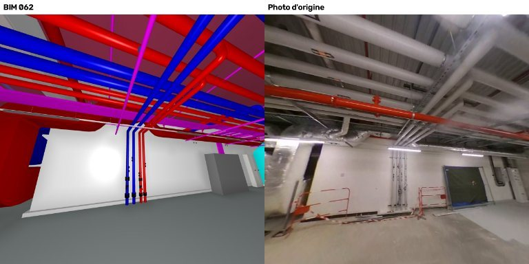
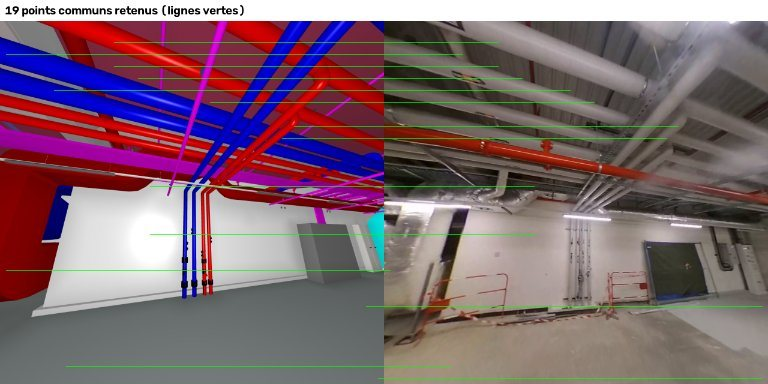
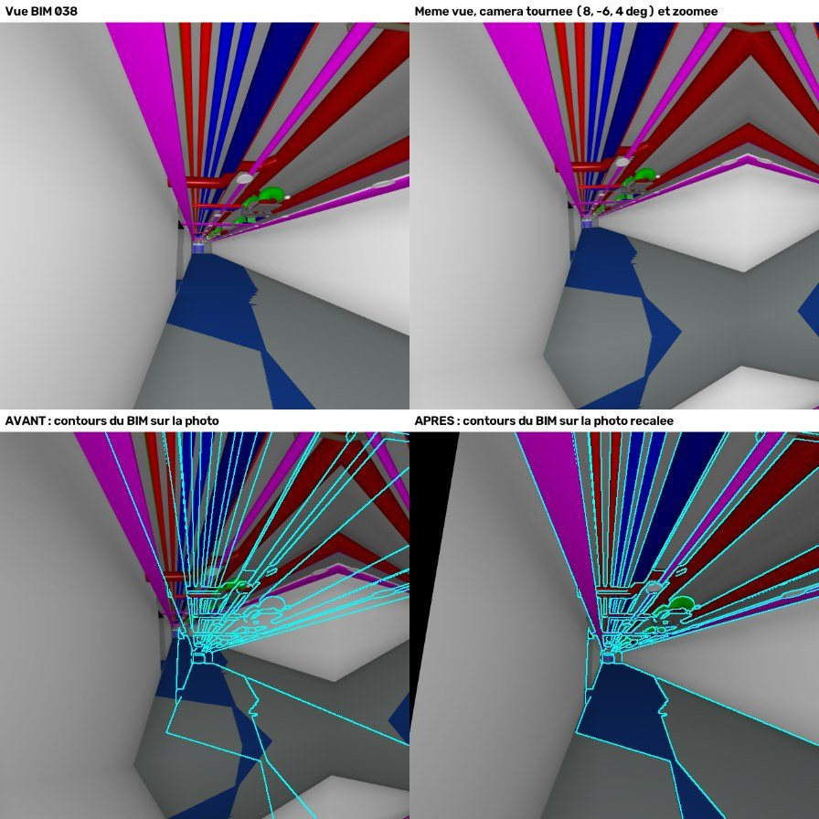
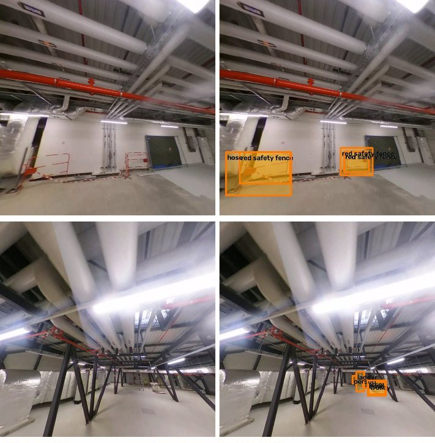

BIM vs photo de chantier
Retrouver la vue BIM d'une photo de chantier, aligner les deux images et signaler les ecarts.

A propos du projet
Sur un chantier, le chef de chantier prend des photos et veut savoir ce qui ne correspond pas a la maquette numerique (BIM). Le projet retrouve automatiquement la vue BIM qui correspond a une photo, aligne les deux images, puis signale les ecarts.
1. Retrouver la bonne vue BIM
J'ai compare plusieurs familles de descripteurs sur de vraies paires BIM / photo : HOG, DINOv2 (token CLS et tokens de patchs), LightGlue et LoFTR. Les rendus BIM n'ont ni texture ni eclairage realiste, donc le matching de points seul echoue souvent (23 % de top-1 avec LightGlue). Un descripteur base sur les contours atteint 69 % de top-1 et 88 % de top-3.
2. Aligner la photo sur le BIM
Correspondances denses (LoFTR, plus proches voisins mutuels entre patchs DINOv2), filtrees par RANSAC / MAGSAC pour estimer une homographie. Quand il y a trop peu de points, une recherche sur GPU de la rotation et du zoom de la camera (H = K·R·K-1) maximise l'alignement des contours.


3. Separer les vrais ecarts des objets temporaires
Un chantier est plein d'objets qui ne sont pas dans le BIM : barrieres, echelles, cartons, personnes. Une detection a vocabulaire ouvert (Grounding DINO) et des masques SAM les ecartent avant de comparer, puis un VLM verifie les ecarts restants et un rapport PDF est genere.

Projet de R&D en cours chez FCT-Arcy. Code non public.